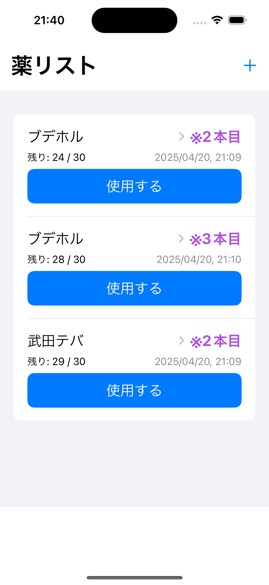

MediCount
Controla las dosis restantes de inhaladores y sprays nasales
Cuenta las dosis y revisa lo que queda—para rinitis, alergias, asma y más

Controla las dosis restantes de inhaladores y sprays nasales
Cuenta las dosis y revisa lo que queda—para rinitis, alergias, asma y más
Noviembre de 2026 — Versión 3.02.00: copia de seguridad gratis y compatibilidad con iPad.
Una app para controlar fácilmente las dosis restantes de medicamentos que no muestran cuánto queda—como inhaladores para el asma y sprays nasales para la rinitis y las alergias. Registra cada dosis con un contador y ve lo que queda de un vistazo.
Qué hace: Ingresa el total de dosis y cuántas usaste, y la app muestra lo que queda en tiempo real.
Ventaja: Sabe siempre cuántas dosis te quedan y olvídate de la preocupación de quedarte sin medicamento.
Qué hace: Solo toca el botón “Usar” para registrar una dosis. El historial se guarda automáticamente.
Ventaja: Fácil de usar, para que no se te pase ningún registro y la cuenta sea exacta.
Qué hace: Registra varias unidades del mismo medicamento (p. ej., Unidad 1, Unidad 2) y sigue lo que queda y el historial de cada una.
Ventaja: Es fácil organizarte y ver de un vistazo cuánto queda en cada una.
Qué hace: Registra fecha, hora y una nota de cada dosis, y edítalas o elimínalas cuando lo necesites.
Ventaja: Revisa las dosis anteriores—útil al hablar con tu médico o ajustar el tratamiento.
Qué hace: Los medicamentos en uso y los terminados se muestran por separado, con un diseño simple y fácil de leer.
Ventaja: Cualquiera puede usarla, y el control diario se vuelve sin estrés.
Qué hace: Exporta tus registros a un archivo e impórtalos después. Los archivos exportados están cifrados.
Ventaja: Lleva tus registros al cambiar de teléfono o al usar iPhone y iPad. También puedes combinar registros de otro dispositivo.
Qué hace: Funciona también en iPad, con un diseño adaptado a la pantalla más grande.
Ventaja: Revisa tus registros en el iPad familiar o en una pantalla más grande en casa.
La versión 4.00.00 agrega las siguientes funciones. Todas las funciones existentes siguen siendo gratis.
Qué hace: Recibe una notificación a horas fijas cada día, para cada medicamento. Si ya registraste la dosis, no hay aviso.
Ventaja: Evita olvidos y acaba con la duda de “¿ya lo usé?”.
Qué hace: Ordena los medicamentos de la lista como prefieras.
Ventaja: Deja arriba los que más usas y regístralos al instante.
Qué hace: Aprende cada función probándola en las pantallas reales de la app. Nada de la práctica se guarda, así que tus registros reales no cambian.
Ventaja: Empieza sin dudas, incluso la primera vez. También te avisa cuando hay funciones nuevas disponibles.
Qué hace: Gestiona los medicamentos de hasta 5 personas, incluyéndote, separados por persona. Toca un nombre arriba de la pantalla para cambiar. Compra una vez y úsalo para siempre.
Ventaja: Revisa lo que queda en los inhaladores y sprays nasales de tus hijos y tu familia, todo en una sola app.
* Esta función gestiona los medicamentos de tu familia dentro de esta app. No es compatible con En Familia de Apple.
Qué hace: Incluye pronóstico de cuándo se acabará, alertas cuando quede poco (alertas de restantes), widgets en la pantalla de inicio, informes para mostrar al médico y cambio de ícono y tema. Compra una vez y úsalo para siempre.
Ventaja: Date cuenta antes de quedarte sin medicamento y muestra tu registro de uso tal cual en la consulta.
Qué hace: Incluye Familia y Pro.
Ventaja: Usa las funciones Pro con los medicamentos de toda tu familia.
